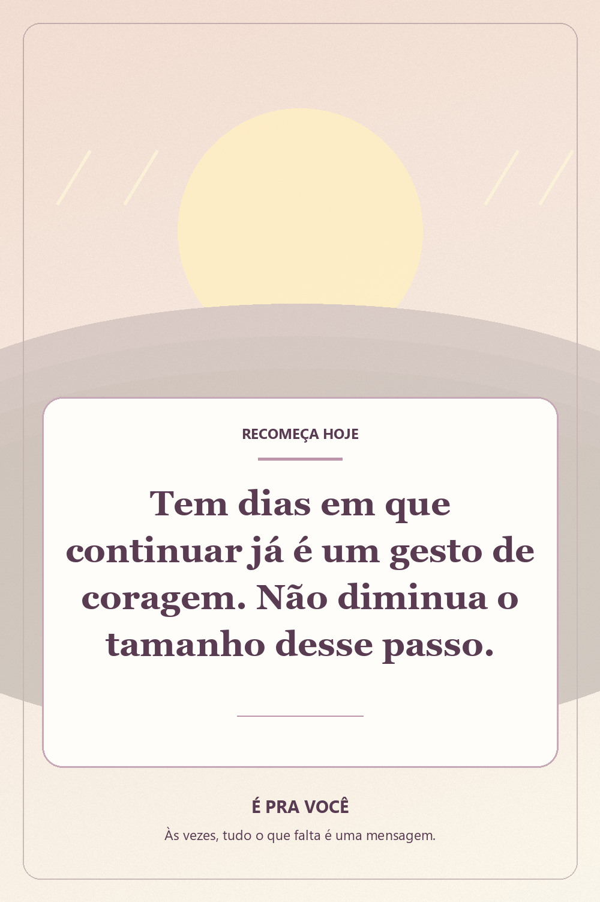
coragem
A coragem de continuar
Mensagem original sobre coragem e recomeços. Salve esta reflexão para lembrar que passos pequenos também merecem respeito.
Um espaço de carinho, fé e reflexão, inspirado na vontade de transformar palavras em gestos. Todas as artes e frases desta coleção são originais. Escolha a que combina com seu momento e compartilhe se quiser.

Mensagem original sobre coragem e recomeços. Salve esta reflexão para lembrar que passos pequenos também merecem respeito.
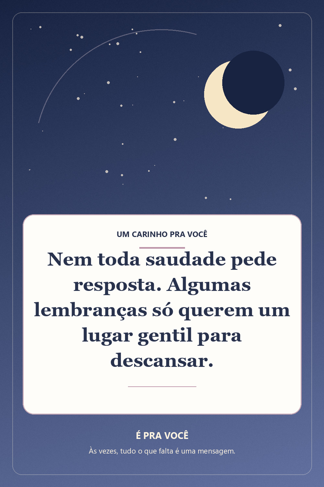
Uma reflexão delicada sobre saudade, lembranças e carinho. Compartilhe com quem guarda memórias bonitas.
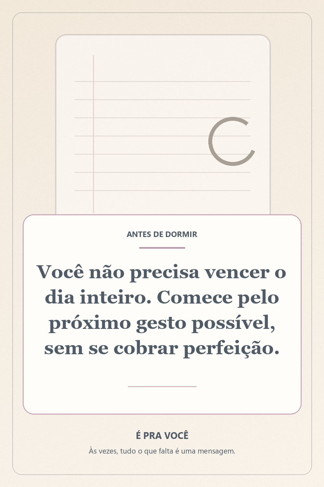
Uma mensagem de serenidade para respirar, descansar e continuar com gentileza. Arte original É Pra Você.
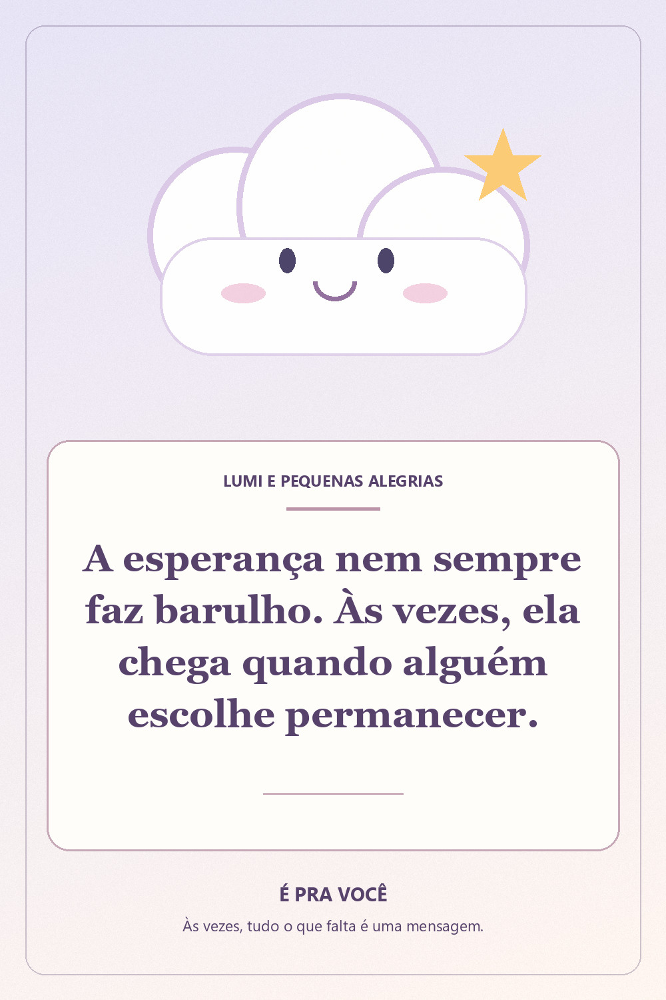
Frase autoral sobre esperança e acolhimento. Uma arte para salvar, enviar e encontrar força nos gestos simples.
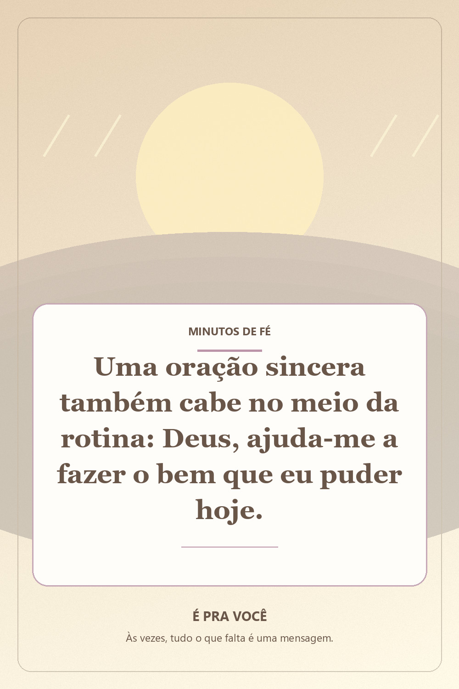
Mensagem evangélica original de oração e fé para o dia a dia, sem prometer resultados ou milagres.
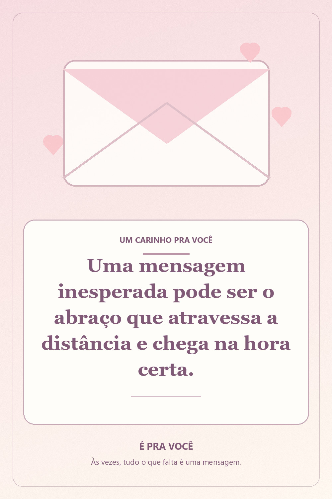
Mensagem fofa original para amiga, família ou alguém especial. Uma lembrança de que carinho cabe em palavras simples.
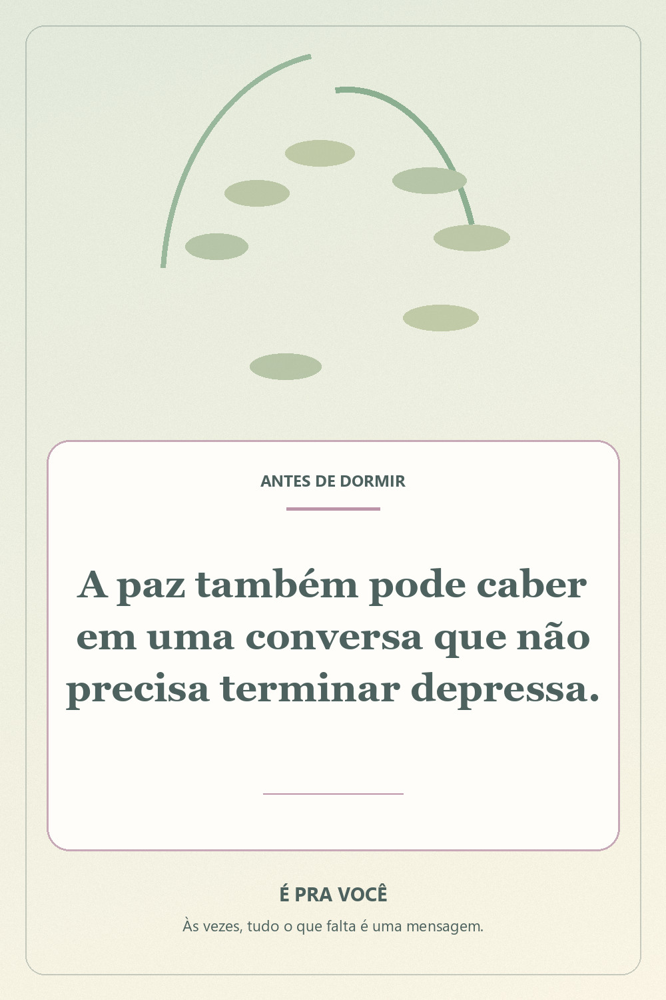
Reflexão original sobre ouvir com carinho, cuidar das relações e encontrar paz nos encontros.
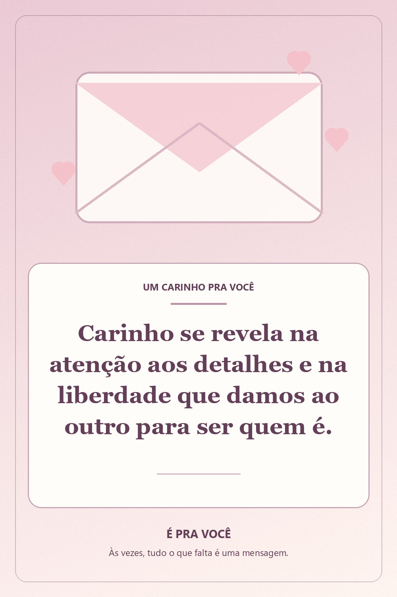
Uma mensagem original sobre amor gentil e respeito nos relacionamentos, para guardar e compartilhar.
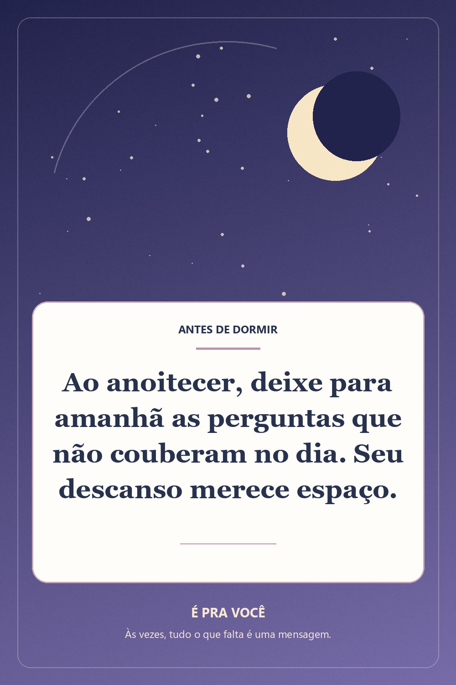
Boa noite com uma mensagem original de serenidade e acolhimento. Salve para ler antes de dormir.
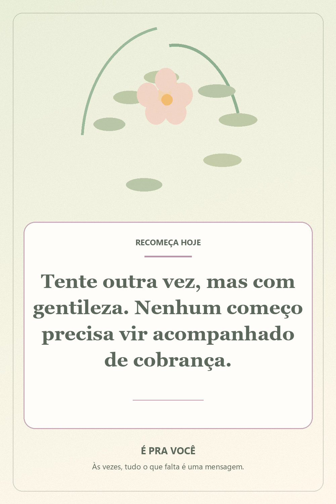
Mensagem motivacional sem pressão para quem quer recomeçar com calma. Reflexão original do É Pra Você.
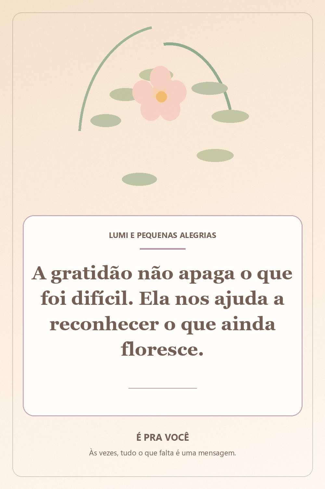
Uma reflexão bonita e original sobre gratidão, sem negar os dias difíceis. Envie a alguém querido.
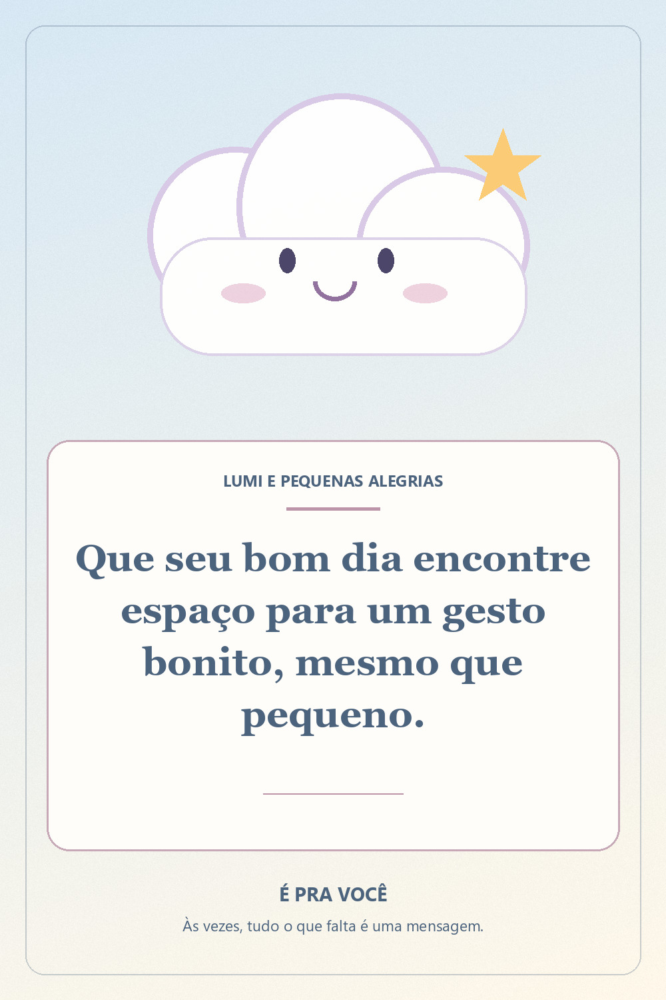
Bom dia com ternura e esperança. Uma mensagem curta e original para começar o dia de forma leve.
O Pinterest é uma plataforma independente. Os botões apenas abrem sua ferramenta oficial de salvar; nenhum Pin é publicado automaticamente em seu nome.